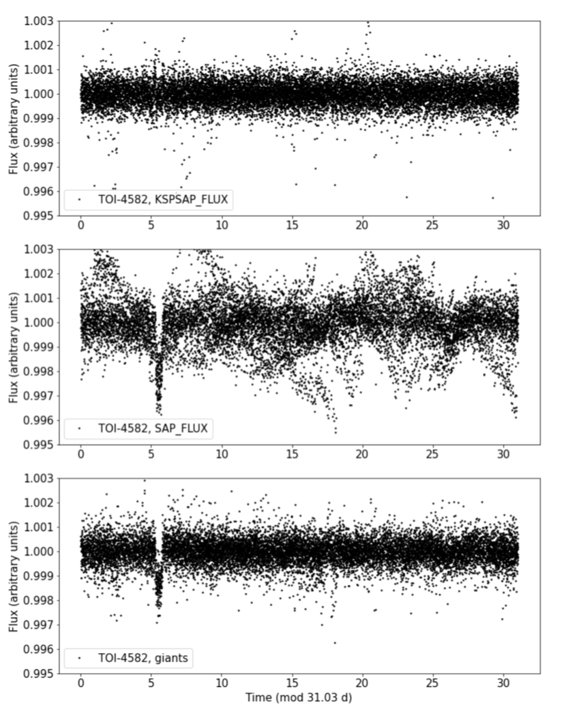
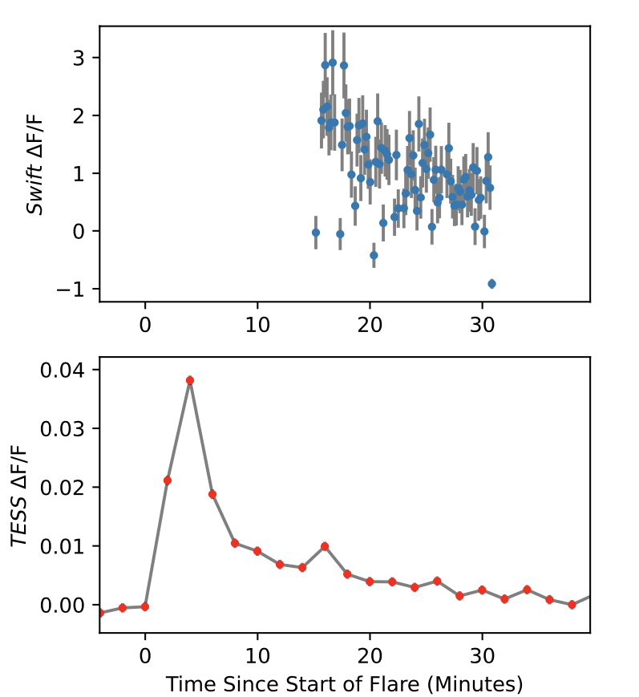
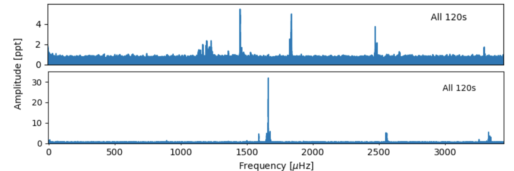

Welcome TESS followers to our latest news bulletin! This week, we are looking at three recent papers from the archive. Enjoy!
TESS Giants Transiting Giants III: An eccentric warm Jupiter supports a period-eccentricity relation for giant planets transiting evolved stars (Grunblatt et al. 2022) :
Discovering planets on short, eccentric orbits around evolved stars is important for better understanding a suite of astrophysical processes including star-planet interactions, planet radius inflation, occurrence rates, etc. This paper presents the discovery and analysis of TOI-4582 b, an eccentric warm Jupiter in orbit around a star with a log(g) = 3.77. Grunblatt et al. (2022) combine Full-Frame image TESS data from Sectors 14-26 with radial velocity measurements from Keck/HIRES and FLWO/TRES, Gaia data, observations from the 2.5m SAI and the 3.5m WIYN telescopes, and MESA isochrone models to analyze the system and characterize the planet and its host star TOI-4582. The planet has an orbital period of 31.034 days, eccentricity of 0.51, radius of 0.94 RJup and mass of 0.53 MJup. The star has a radius of 2.5 RSun, mass of 1.34 MSun, Teff = 5190 K, age of 4 Gyr, rotation period of about 73 days. The authors find no evidence for resolved stellar companions in the imaging data or for unresolved companions in the spectroscopic data. Grunblatt et al. (2022) note that, at the time of writing, TOI-4582 b is one of the longest-period and most eccentric planets transiting a star with log(g) < 3.8. The shorter cadence and longer baseline of the extended TESS mission will provide important new insight into TOI-4582 b and similar systems, potentially including detailed asteroseismological characterization.
Characterisation of the NUV and Optical Emission and Temperature of Flares from Ross 733 with Swift and TESS (Jackman 2022) :
Simultaneous multi-wavelength observations provide key information on the mechanisms underlying stellar activity, in particular on the high-energy emission of low-mass stars. This paper presents the results of coordinated near-ultraviolet and optical observations of the M-star spectroscopic binary Ross 733. Jackman (2022) combine 2-min cadence TESS photometry from Sector 40 (as part of a Target of Opportunity request) and 12.4 ks photometry from Swift obtained with the UVM2 filter to examine the flare activity of the system. The author detects and visually confirms 40 flare candidates in TESS data, calculates the corresponding flare rate, and estimates the flare energies assuming a 9000K blackbody spectrum. Jackman (2022) detects two NUV flares in Swift data, one lasting 120 sec and the other 15 min. The author calculates a total system flare energy of 10^33 erg every 1.5 days, measures a pseudo-continuum temperature of 7340 K, finds that a 9000 K blackbody model underestimates the number of expected flares, and argues that this is likely due to higher peak flare continuum temperatures and contribution from line emission. TESS continues to be a key mission for joint observational efforts aimed at multi-wavelength flare detection and characterization.
Asteroseismology of PG 1541+651 and BPM 31594 with TESS (Romero et al. 2022) :
The vast majority of the stars in the Galaxy will evolve into white dwarfs, about 80% of which will end up as ZZ Ceti type variables. These are pulsating white dwarfs that exhibit pulsation amplitudes of 1-60 parts per thousands and periods of 70-3000 sec. This paper presents a detailed asteroseismology analysis of two warm-like ZZ Ceti variable, PG 1541+651 and BPM 31594, previously discovered as such from ground-based observations. Romero et al. (2022) use 20-sec and 120-sec cadence TESS data from sectors 14-17, 21-24, 41, 47, 48, 50, and 51 (for PG 1541+651) and sectors 3, 4, 30, 31 (for BPM 31594), and Fourier transforms to detect pulsations from the two targets. The authors detected 12 pulsation modes for PG 1541+651 and six for BPM 31594 and identified rotation period of about 22 hours for the former and about 11.5 hours for the latter. From their asteroseismological fit, they estimated stellar masses of about 0.6 MSun for both targets, effective temperature of 11,240 K for PG 1541+651 and 11,560 K for BPM 31594, mass of the hydrogen envelope of 2.7x10^-6 MSun for the former and 4.8x10^-5 MSun for the latter. The dramatic increase in the number of detected pulsations modes thanks to TESS highlights the importance of high-quality, short-cadence, long-duration observations.

Fig. 1: Taken from Grunblatt et al. (2022). Phase-folded TESS photometry of TOI-4582 from QLP (upper panel), SPOC (middle panel), and the authors' "giants" pipeline (lower panel).

Fig. 2: Taken from Jackman (2022). Simultaneous flare observations with TESS (lower panel) and Swift (upper panel). The author calculates an average pseudo-continuum flare temperature of 7340 K during the decay phase.

Fig. 3: *Taken from Romero et. al. (2022). Fourier transforms of all 120-sec cadence TESS data for PG 1541+651 (upper panel) and BPM 31594 (lower panel). *